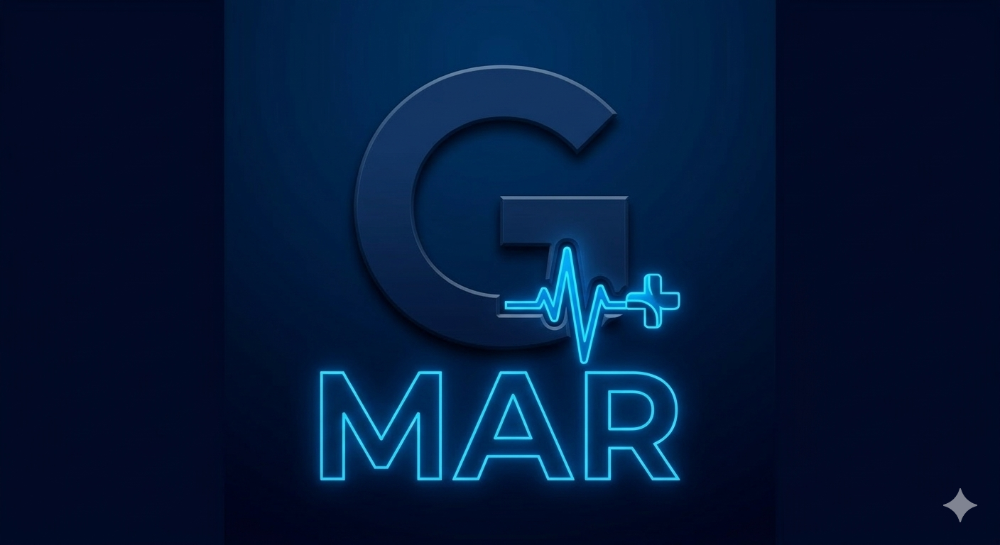

Guía electrónica en PDF
Información práctica y actualizada sobre los medicamentos de alto riesgo.
Consultar guía PDF Disponible
Hospital Universitario Torrecárdenas · Almería
GUIAMAR es un proyecto colaborativo sin ánimo de lucro orientado a facilitar el acceso a información práctica sobre los medicamentos de alto riesgo utilizados en el Hospital Universitario Torrecárdenas, como apoyo a la práctica clínica de los profesionales sanitarios.
Acceso al proyecto
Los recursos se irán activando conforme finalice su revisión y publicación.
Información práctica y actualizada sobre los medicamentos de alto riesgo.
Consultar guía PDF DisponibleAcceso rápido y sencillo desde dispositivos Android.
En preparaciónVersión iOS de GUIAMAR preparada para publicación en App Store.
En preparaciónConsulta y apoyo basado en la información de la guía.
En desarrolloProyecto colaborativo
GUIAMAR nace del trabajo altruista de profesionales que dedican parte de su tiempo libre a revisar, actualizar y acercar información útil a la práctica asistencial.
“La seguridad en el uso de los medicamentos también se construye con conocimiento compartido.”
Entidades y equipos participantes
Información importante
GUIAMAR es una herramienta de apoyo a la práctica clínica. No sustituye la ficha técnica oficial del medicamento, el prospecto autorizado, los protocolos vigentes ni el juicio clínico del profesional responsable.